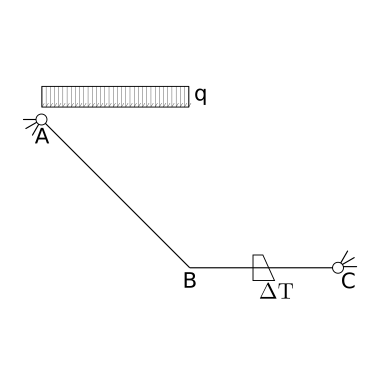

9.7. Problems#
Solve the structure and evaluate the displacement in B.

Solution.
Method 1. Elastic line.
From equilibrium, bending internal action as a function of coordinate \(z\), from \(A: \, z = 0\) to \(B: \, z = b\) reads
with \(\widetilde{z} = b - z\) the coordinates pointing from \(B\) to \(A\).
Integrating twice with boundary conditions at clamp \(w(z=0)\), \(w'(z) = 0\)
The displacement in B reads
Method 2.
…

Solution.
Method 1. Elastic line.
From equilibrium, bending internal action as a function of coordinate \(z\), from \(A: \, z = 0\) to \(B: \, z = b\) reads
with \(\widetilde{z} = b - z\) the coordinates pointing from \(B\) to \(A\).
Integrating twice with boundary conditions at clamp \(w(z=0)\), \(w'(z) = 0\)
The displacement in B reads
Method 2.
…

Solution.
The structure is hyper-static once. Let’s use the verical reaction \(V_B\) introduced by the cart in \(B\) as the (independent) unknown hyper-static action. Exploiting the results of the previous problems (1, 2) and the principle of superposition of causes and effects, bending momentum reads
Method 1 - Elastic line. Integrating the expression of the bending moment twice
Boundary conditions (3) are
and allows to evaluate both the integration constant \(a = 0\), \(b = 0\) and the hyperstatic action \(V_B\)
Thus, the displacement reads
Method 2 - PCVW. The problem can be also solved using the principle of complementary virtual work for beams, ignoring contributions of axial and shear deformation. Here, a virtual load corresponding to unitary hyperstatic action in \(B\), \(\widetilde{V}_B = 1\), s.t. the virtual internal bending moment reads \(\widetilde{M}(z) = b - z\), and the “real” displacement \(w_B = 0\) due to the carti constraint in \(B\). Thus, the PCVW reads
so that the hyper-static action is

Solution.
The structure is three times hyper-static. One hyperstatic acting in the axial direction is identically zero. Other two hyper-static actions are choosen here to be the vertical reaction \(V_B\) and moment \(M_B\) at the clamp in \(B\). Bending moment as a function of the hyperstatics reads
Method 1 - Elastic line.
…
Method 2 - PCVW.
as the two real displacements in \(B\) are zero, \(w_B = 0\), \(\theta_B = 0\). Two independent virtual loads are used to get a system of 2 equations in the 2 hyperstatic unknowns:
\(\widetilde{V}_B^1 = 1\), \(\widetilde{M}_B^1 = 0\) and thus \(\widetilde{M}^1(z) = b-z\)
\(\widetilde{V}_B^2 = 0\), \(\widetilde{M}_B^2 = 1\) and thus \(\widetilde{M}^2(z) = 1\)
The equations become
or in matrix form,
The solution of the linear system reads

Solution.
Rotational spring in \(B\) links the rotation with the moment as \(M_B = - k \theta_B = - k w'_B\). Mathematically, this is a Robin boundary condition, i.e. a linear combination of a kinematic variable and an action, here an angle and a moment.
As the elastic constraint introduce the unknown moment \(M_B\), or equivalenly the unknown angle \(\theta_B = - \frac{M_B}{k}\), the structure can be treated as three times hyper-static. One hyperstatic acting in the axial direction is identically zero. Other two hyper-static actions are choosen here to be the vertical reaction \(V_B\) and moment \(M_B\) at the clamp in \(B\). Bending moment as a function of the hyperstatics reads
Method 1 - Elastic line.
Method 2 - PCVW. Differently from previous problems, the real displacements are not identically zero as the rotation \(\theta_B\) is not rigidly constrained to be zero, but this rotation is contrasted by an elastic spring introducing a real benging moment \(M_B = - k \theta_B\) into the beam. The principle of complementary virtual work reads
as the two real displacements in \(B\) are \(w_B = 0\), \(\theta_B = - \frac{M_B}{k}\). Two independent virtual loads are used to get a system of 2 equations in the 2 hyperstatic unknowns:
\(\widetilde{V}_B^1 = 1\), \(\widetilde{M}_B^1 = 0\) and thus \(\widetilde{M}^1(z) = b-z\)
\(\widetilde{V}_B^2 = 0\), \(\widetilde{M}_B^2 = 1\) and thus \(\widetilde{M}^2(z) = 1\)
The equations become
or in matrix form,
The solution of the linear system reads
Limit cases.

Solution.
The structure is hyper-static once. Let the vertical component \(V_C\) of the reaction in \(B\) be the (independent unknown) hyperstatic action. From equilibrium conditions, the reactions in \(A\) and \(B\) read
Bending moment. In \(AB\), with \(z\)-coordinate as the coordinate along the axis from \(A: z= 0\), to \(B: z=\sqrt{2}b\),
In \(CB\), with \(z\)-coordinate from \(C\) to \(B\)
Method 1 - Elastic line.
…
Method 2 - PCVW.
as the real displacement \(w_C = 0\). One set of virtual loads is used to get the equation required to evaluate the hyper-static action \(V_C\):
\(\widetilde{V}_C^1 = 1\) and thus \(\widetilde{M}_{AB}^1(z) = \frac{z}{\sqrt{2}}\), \(\widetilde{M}_{BC}^1(z) = z\)
The equation becomes
so that

Solution.
Solve with \(F = qb\).
Kinematic analysis.
…as the reactions from the springs are unknown, the structure can be considered as three times hyperstatic (\(3\) beams: \(3 \times 3 = 9\) d.o.f., \(12\) d.o.c., \(12-9 = 3\) actual d.o.c.; todo: explicitly prove that there’s no rigid degree of freedom…)
Reactions at ground and opening the loops.

With an incremental removal of constraints, and the corresponding equilibrium conditions provide 5 relations between 8 unknown actions,
i.e. a linear system that is 3 times under-determined (in agreement with the 3 hyperstatics evaluated above). Here the independent unknown hyperstatics are chosen to be \(V_D\), \(M_A\), \(M_H\), and thus
Internal bending moment, as a function of the hyperstatics.
Method 1 - Elastic line.
Method 2 - PCVW.
as the hinge constraint set no relative displacement in \(D\), \(u_{D,2} - u_{D,1} = 0\), and the rotations in \(A\) and \(H\) can be written as functions of the moments \(M_A\), \(M_H\) introduced into the structure by the rotational springs. Three sets of virtual loads are used to get the linear system required to evaluate the hyper-static actions \(M_A\), \(M_H\), \(V_D\)
\(\widetilde{M}_A^1 = 1\), \(\widetilde{M}_H^1 = 0\), \(\widetilde{V}_D^1 = 0\),
\(\widetilde{M}_A^2 = 0\), \(\widetilde{M}_H^2 = 1\), \(\widetilde{V}_D^2 = 0\),
\(\widetilde{M}_A^3 = 0\), \(\widetilde{M}_H^3 = 0\), \(\widetilde{V}_D^3 = 1\),
Checking physical dimensions. In the equation above, numerical coefficients are well separated from groups of physical quantities, that (should) have the physical dimension of a force. Both the unknown and the first term on the RHS are readily checked. Physical dimensions of the last contribution reads
The ratio \(\frac{EJ}{kb}\) is non-dimensional
being \(\text{moment} = \text{force} \cdot \text{length}\).
Evaluation of the integrals of the inverse of the stiffness matrix
Line integrals of the first equation read
being the first integral
Line integrals of the second equation read
Line integrals of the third equation read